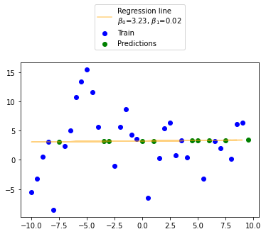
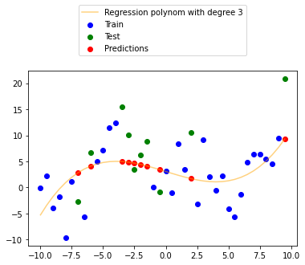
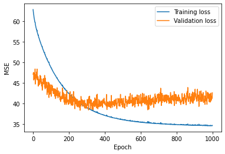
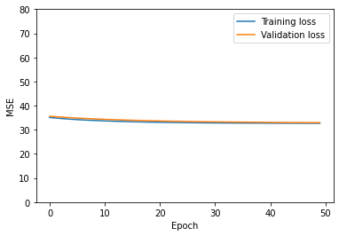
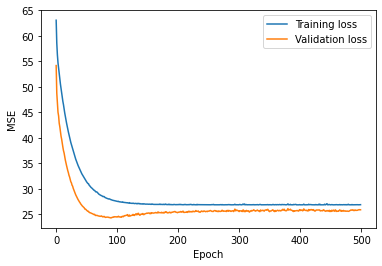
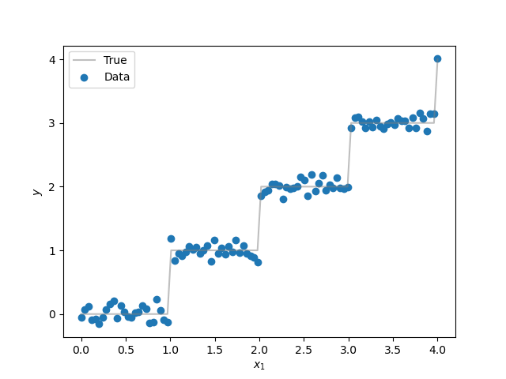

Generalisering: validering og bias–varians
Lav treningsfeil er lett å få. Det vanskelige er en modell som fungerer på data den aldri har sett. Dette kapittelet handler om hvordan vi måler generalisering (validering, læringskurver, kryssvalidering), hvorfor feilen oppstår (bias–varians) og en modell som er fleksibel på en annen måte (regresjonstrær).
Etter dette kapittelet skal du kunne
- forklare over- og undertilpasning og rollen til trenings-, validerings- og testdata
- lese læringskurver og bruke early stopping med toleranse og patience
- forklare kryssvalidering (LOOCV og k-fold) med fordeler og ulemper
- skrive opp og tolke $\mathbb E[(y-f(x;D))^2]=\text{Bias}^2+\text{Var}+\sigma^2$, og regne bias og varians med tall
- skille bias i bias–varians fra biasleddet $b$ eller $\beta_0$
- forklare hvordan regresjonstrær deler datarommet, splittregelen (minst varians etter splitt) og forskjellene mellom trær og regresjon
7.1Over- og undertilpasning
I kapittel 6 så vi at polynomer av grad 1, 3 og 15 ga svært ulike modeller for de samme dataene. Det er to måter å bomme på:
Modellen er for enkel til å fange sammenhengen i dataene. Feilen er høy allerede på treningsdataene. Eksempel: en rett linje til en parabel.
Modellen har kapasitet til å tilpasse seg treningsdataene så godt, støyen inkludert, at det går utover generaliseringsevnen. Treningsfeilen er lav, men feilen på nye data er høy. Eksempel: grad 15.



Eksamenspugging. En student som pugger fasiten til gamle eksamener ordrett, får full skår på dem (lav treningsfeil), men står fast på nye oppgaver (høy testfeil). Det er overtilpasning. En student som bare har lest overskriftene, gjør det dårlig på begge. Det er undertilpasning. Målet er å forstå mønsteret.
Hvilken beskrivelse passer best på overtilpasning?
- Modellen har høy feil både på trenings- og testdata
- Modellen trenes for kort tid til at tapet rekker å synke
- Modellen har høyere feil på treningsdata enn på testdata
- Modellen har lav feil på treningsdata, men mye høyere feil på nye data, fordi den har lært støy og tilfeldigheter i treningssettet
7.2Trening, validering og test
Vi må kunne oppdage overtilpasning mens vi jobber, slik at vi kan justere hyperparametre (polynomgrad, tredybde, læringsrate, antall epoker). Hvilke data kan vi bruke til det?
- Ikke treningsdataene. Treningen har som mål å tilpasse modellen best mulig til nettopp dem, så treningsfeilen blir alltid kunstig lav. En modell som har pugget alt, ser perfekt ut.
- Ikke testdataene. Testdataene skal ikke brukes til noen som helst justering. De skal kun brukes til én endelig test når modellen er ferdig. Bruker vi dem til å velge hyperparametre, har vi ikke lenger usette data å teste den endelige modellen på.
Løsningen er å dele datasettet i tre deler i stedet for to:
Hver gang vi tar en avgjørelse basert på et datasett, lekker litt informasjon om det datasettet inn i modellen. Prøver vi 50 hyperparameterkombinasjoner og velger den med best testskår, har vi i praksis «trent» på testsettet. Den skåren er da optimistisk, fordi vi har valgt modellen som tilfeldigvis passet best til akkurat disse punktene. Testsettet er bare et ærlig estimat på fremtidig ytelse hvis det ikke har påvirket noen avgjørelser.
Trening = lærebok, validering = prøveeksamen, test = den ekte eksamenen. Du kan ta så mange prøveeksamener du vil og justere lesingen etter dem. Men den ekte eksamenen tar du én gang, og hvis du har sett oppgavene på forhånd, sier karakteren ingenting om hva du kan.
To splitter med train_test_split
train_test_split fra sklearn.model_selection deler i to. Vi kaller den to ganger og får tre uavhengige sett:
from sklearn.model_selection import train_test_split
# 1) skill ut testsettet (20 %) og legg det bort
X_rest, X_test, y_rest, y_test = train_test_split(X, y, test_size=0.2)
# 2) del resten i trening og validering (25 % av 80 % = 20 % av alt)
X_train, X_val, y_train, y_val = train_test_split(X_rest, y_rest, test_size=0.25)Datasettet har 1000 punkter. Du kjører koden over (først test_size=0.2, så test_size=0.25 på resten). Hvor mange punkter havner i treningssettet?
test_size=0.25 i andre runde betyr 25 % av hele datasettet.Treningsløkke med validering
Treningsløkka fra før må endres slik at den regner ut metrikker på valideringsdataene underveis, for eksempel etter hver epoke eller hver tiende (avhengig av hvor dyrt det er). Notatenes eksempel bruker SGDRegressor (lineær regresjon med stochastic gradient descent):
model = sklearn.linear_model.SGDRegressor(learning_rate='constant', eta0=0.01)
train_losses, val_losses = [], []
n_epochs = 100
for epoch in range(n_epochs):
model.partial_fit(X_train, y_train) # én epoke med SGD på treningsdata
# Monitor training loss
y_train_pred = model.predict(X_train)
train_losses.append(sklearn.metrics.mean_squared_error(y_train, y_train_pred))
# Monitor validation loss (ingen trening her, bare måling)
y_val_pred = model.predict(X_val)
val_losses.append(sklearn.metrics.mean_squared_error(y_val, y_val_pred))partial_fit gjør én runde med oppdateringer uten å nullstille modellen, så vi kan måle mellom hver epoke. Resultatet er to arrays som vi plotter mot epoke. Det er læringskurvene.
Hva kan valideringsdataene brukes til?
- Velge hyperparametre, for eksempel polynomgrad eller tredybde
- Oppdatere vektene med gradient descent
- Bestemme når treningen skal stoppe (early stopping)
- Oppdage overtilpasning underveis i treningen
- Rapportere den endelige ytelsen til modellen i en artikkel
Hvorfor kan vi ikke bruke treningsfeilen til å oppdage overtilpasning?
- Fordi treningen nettopp minimerer feilen på treningsdataene, så den fortsetter å synke selv når modellen begynner å lære støy
- Fordi treningsfeilen alltid er høyere enn testfeilen
- Fordi treningsfeil bare kan måles for klassifisering, ikke regresjon
- Fordi treningsfeilen er uavhengig av modellkompleksiteten
En medstudent sier: «Jeg prøvde 30 tredybder og valgte den som ga best accuracy på testsettet: 94 %. Da er 94 % et godt estimat på hvordan modellen gjør det i praksis.» Hva er galt?
7.3Læringskurver og early stopping
Plotter vi trenings- og valideringstap mot epoke, kan vi lese av hvordan treningen går. Figur 7.3 viser tre typiske mønstre fra notatene.



| Mønster | Diagnose | Typisk tiltak |
|---|---|---|
| (a) Treningstapet synker jevnt, mens valideringstapet er høyere og flater ut eller stiger | Overtilpasning. Modellen er trolig for kompleks. | Enklere modell, mer data, regularisering, early stopping |
| (b) Begge kurvene flater ut med høyt tap og ligger nær hverandre | Undertilpasning. Modellen mangler kapasitet eller riktig form. Det tydeligste tegnet er høyt treningstap. | Mer kompleks modell, flere eller bedre features |
| (c) Begge synker jevnt og flater ut på omtrent samme nivå | God tilpasning. Modellen fanger mønsteret og generaliserer. | Ferdig. Evaluer på test. |
Se på gapet og på høyden. Stort gap (validering ≫ trening) betyr overtilpasning eller høy varians. Begge høye og uten gap betyr undertilpasning eller høy bias. Begge lave og uten gap er målet.
Early stopping
Vi trenger ikke bestemme antall epoker på forhånd. Vi kan heller lage et stoppkriterium (early stopping criterion): Stopp når valideringstapet ikke har blitt bedre med mer enn en toleranse i løpet av de siste $n$ epokene. Antallet $n$ kalles ofte patience.
- Toleranse (tol): Hvor stor forbedring som teller. Uten toleranse kan støy på 0,0001 holde treningen i gang i det uendelige.
- Patience: Hvor mange epoker vi venter uten forbedring før vi gir opp. Valideringstapet er støyete, så én dårlig epoke betyr ikke at det er over.
- Vanligvis tar vi vare på (eller går tilbake til) parametrene fra epoken med best valideringstap.
Læringskurvene kan også brukes til å justere andre hyperparametre underveis. Det er for eksempel vanlig å senke læringsraten i løpet av treningen. Store steg i starten kommer raskt ned i dalen, og små steg mot slutten lar oss finjustere i stedet for å hoppe fram og tilbake rundt minimum. Det er særlig viktig for SGD, der gradienten er støyete.
Early stopping med patience = 3 og toleranse = 0,05: Treningen stopper når valideringstapet ikke har gått ned med mer enn 0,05 under beste verdi så langt, tre epoker på rad. Valideringstapet etter epoke 1, 2, 3, … er $10{,}0;\ 8{,}0;\ 7{,}0;\ 6{,}50;\ 6{,}48;\ 6{,}52;\ 6{,}55;\ 6{,}60$. Etter hvilken epoke stopper treningen?
Epoke 5: 6,48 er bare 0,02 bedre, mindre enn toleransen, så teller = 1.
Epoke 6: 6,52, teller = 2. Epoke 7: 6,55, teller = 3 = patience, så stopp etter epoke 7.
Vi går tilbake til parametrene fra epoke 4 (eller 5, avhengig av implementasjon, siden 6,48 er litt lavere selv om forbedringen var under toleransen).
4.2: Treningsfeilen blir svært liten, valideringsfeilen slutter å forbedre seg og øker deretter, og prediksjonene endrer seg merkbart med en annen tilfeldig datasplitt. Riktig: høy varians, fordi modellen overtilpasser og generaliserer dårlig.
4.3: Polynommodeller A (grad 1: trening 34, validering 34), B (grad 3: 12 / 14) og C (grad 12: 0,02 / 110). Hvilken overtilpasser? Riktig: modell C, med nesten null treningsfeil og enorm valideringsfeil. A undertilpasser, og B er den du bør velge.
En modell har treningstap 52 og valideringstap 53 etter 500 epoker. Begge har vært flate siden epoke 30. En enkel referansemodell som alltid predikerer gjennomsnittet, har tap 60. Hva er mest sannsynlig?
- Overtilpasning. Modellen bør forenkles
- Undertilpasning. Modellen mangler kapasitet eller gode features
- God tilpasning. Kurvene ligger jo nær hverandre
- For høy læringsrate. Tapet har sluttet å synke
Du trener samme type modell på fem ulike tilfeldige splitter av dataene. Treningsfeilen er nær null hver gang, men valideringsfeilen varierer mellom 15 og 80, og de lærte kurvene ser helt forskjellige ut. Hva indikerer dette?
- Høy bias, fordi modellen bommer systematisk
- Lav varians, fordi treningsfeilen er stabil på tvers av splittene
- Irredusibel støy, fordi ingen modell kan gjøre det bedre
- Høy varians, fordi modellen er svært følsom for hvilke data den ble trent på, og overtilpasser
Du sammenligner polynomgrader. Hvilken modell bør du velge før du evaluerer på testsettet?
D: grad 2, trenings-MSE 40, validerings-MSE 41 · E: grad 5, trenings-MSE 15, validerings-MSE 16 · F: grad 9, trenings-MSE 9, validerings-MSE 25
- D, fordi gapet mellom trening og validering er minst
- E, fordi den har lavest valideringsfeil
- F, fordi den har lavest treningsfeil
- Den som gir lavest feil på testsettet
Hvorfor bruker early stopping en patience (vente $n$ epoker) i stedet for å stoppe første gang valideringstapet øker?
- Fordi valideringstapet alltid øker de første epokene
- Fordi valideringstapet er støyete, så én dårligere epoke kan være tilfeldig og forbedringen kan fortsette etterpå
- Fordi patience gjør at modellen trener lenger og derfor alltid blir bedre
- Fordi treningstapet må nå null før vi kan stoppe
Hva er hensikten med å senke læringsraten i løpet av treningen?
- Å unngå at modellen undertilpasser
- Å gjøre hver epoke raskere å regne ut
- Å ta store steg tidlig for rask framgang, og små steg sent så parametrene kan finjusteres i stedet for å hoppe rundt minimum
- Å øke modellkompleksiteten gradvis
7.4Kryssvalidering
Notatene spør: Hvordan velger vi hvilke punkter som havner i trenings-, validerings- og testsettet, og påvirker det resultatet? Splitten skal gjøres tilfeldig, men den påvirker resultatet. Med en annen tilfeldig splitt får vi et litt annet tall. Vi må altså forvente varians i testresultatet avhengig av splitten. I tillegg har vi et annet problem: Hvert punkt vi setter av til validering og test, er et punkt vi ikke kan trene på. Vi vil ha så mye treningsdata som mulig.
Løsningen er kryssvalidering (cross-validation): Gjenta splitten flere ganger slik at hvert punkt får være «usett» én gang, og ta gjennomsnittet.
Leave-one-out (LOOCV)
Med $n$ datapunkter: Ta ut ett punkt, tren på de andre $n-1$, og test på det ene. Gjenta for alle $n$ punktene. Vi får $n$ testresultater, hvert basert på ett punkt, og gjennomsnittet er LOOCV-estimatet. Siden samtlige punkter har vært brukt både til trening og testing, er dette det beste estimatet vi kan lage fra dataene. Prisen er at modellen må trenes $n$ ganger.
k-fold
Del dataene i $k$ like store deler (folds). I hver av de $k$ rundene er én fold testdata og resten treningsdata. Modellen tilpasses $k$ ganger, og vi får $k$ resultater som vi tar gjennomsnittet (og gjerne standardavviket) av. LOOCV er spesialtilfellet $k=n$. Typiske valg er $k=5$ eller $k=10$.
| LOOCV ($k=n$) | k-fold ($k$ = 5–10) | |
|---|---|---|
| Antall treninger | $n$ (dyrt for store data eller tunge modeller) | $k$ (billig) |
| Treningsdata per runde | $n-1$, nesten alt | $\frac{k-1}{k}n$, litt mindre |
| Estimatet | Bruker alle data maksimalt og er deterministisk (ingen tilfeldig foldinndeling) | Avhenger litt av den tilfeldige inndelingen. Hver test bruker mange punkter |
| Når | Små datasett, raske modeller | Standardvalget i praksis |
Notatenes oppgave: Hva er fordeler og ulemper ved k-fold kryssvalidering sammenlignet med LOOCV?
Ulemper med k-fold: Hver modell trenes på færre punkter ($\frac{k-1}{k}n$ i stedet for $n-1$), så estimatet blir litt pessimistisk (modellen trent på alle data vil være litt bedre). Resultatet avhenger også av den tilfeldige inndelingen i folds, mens LOOCV er entydig.
(Fordypning: LOOCV-estimatet kan ha høy varians fordi de $n$ modellene er nesten identiske og dermed sterkt korrelerte. Derfor er $k=5$ eller $10$ ofte et godt kompromiss.)
❓ «What is the purpose of cross-validation?» Et godt svar: Kryssvalidering gir et mer pålitelig estimat av hvordan modellen generaliserer. Den gjentar trening og evaluering på flere splitter av treningsdataene og tar gjennomsnittet, slik at resultatet ikke avhenger av én heldig eller uheldig splitt. Standardavviket viser hvor usikkert estimatet er. Alle punktene blir brukt både til trening og validering, og testsettet holdes urørt. Den brukes typisk til å velge hyperparametre (for eksempel max_depth) eller sammenligne modeller. I prosjektet rapporterte du cv_scores.mean() ± cv_scores.std() fra cross_val_score.
«Hva er hovedforskjellen på hvordan data deles opp i kryssvalidering og bootstrapping?» Riktig: Kryssvalidering deler datasettet i ikke-overlappende delsett, mens bootstrapping trekker tilfeldig med tilbakelegging, slik at samme punkt kan forekomme flere ganger. (Bootstrapping kommer i kapittel 8.)
Hva er hovedhensikten med kryssvalidering?
- Å øke nøyaktigheten til den endelige modellen ved å trene den flere ganger
- Å få et mer pålitelig estimat av generaliseringsevnen, som ikke avhenger av én tilfeldig splitt, og samtidig utnytte dataene bedre
- Å erstatte testsettet, slik at vi aldri trenger et testsett
- Å finne de beste vektene ved å ta gjennomsnittet av vektene fra hver fold
Hvilke utsagn om LOOCV sammenlignet med 5-fold kryssvalidering er riktige?
- LOOCV krever $n$ treninger, mens 5-fold krever 5
- I LOOCV trenes hver modell på $n-1$ punkter, altså flere enn i 5-fold
- LOOCV gir et estimat som avhenger av den tilfeldige inndelingen i folds
- 5-fold bruker hvert datapunkt som testpunkt fem ganger
Du har 500 treningspunkter og bruker 5-fold kryssvalidering. Hvor mange punkter trenes hver av de fem modellene på?
7.5Bias–varians-avveiningen
Vi har sett at både for enkle og for komplekse modeller gir høy testfeil. Bias–varians-dekomposisjonen forklarer hvorfor, og deler den forventede feilen i tre deler med hver sin årsak.
Oppsettet
Vi antar at targets følger en ukjent sann funksjon $F$ som «bare universet kjenner», pluss støy vi ikke kontrollerer (måleapparat, eksterne faktorer):
Likning 60 i notatene
$$y=F(x)+\varepsilon,\qquad \mathbb E[\varepsilon]=0,\quad \text{Var}[\varepsilon]=\sigma^2$$Dette irredusible støyet blir vi ikke kvitt. (Notatene antar normalfordeling med $\sigma=1$, men resultatet gjelder for alle $\sigma$.)
Når vi samler inn et treningsdatasett, trekker vi tilfeldig $n$ observasjoner fra virkeligheten: $D=\{(x_1,y_1),\dots,(x_n,y_n)\}$. Modellen vi trener, avhenger av akkurat denne trekningen, så vi skriver den som $f(x;D)$. Det har den alltid gjort. Vi har bare ikke skrevet $D$ eksplisitt før, fordi vi har jobbet med gitte data. Nå vil vi se hvordan læringsalgoritmen (estimatoren) oppfører seg over mange tenkte trekninger av $D$.
Tusen parallelle universer. Tenk deg at tusen forskere i hvert sitt univers samler inn et eget datasett fra samme virkelighet og trener samme type modell. $\mathbb E_D[\cdot]$ betyr gjennomsnittet over alle tusen. Bias er hvor langt gjennomsnittsmodellen deres er fra sannheten. Varians er hvor uenige de er med hverandre.
Vi bryr oss om feilen på et nytt punkt, i forventning over trekningene av treningsdata. Det viser seg at uansett hvilken modelltype $f$ vi velger, kan den deles opp slik:
Bias–varians-dekomposisjonen (likning 62 / 87 i notatene)
$$\mathbb E_D\Big[\big(y-f(x;D)\big)^2\Big]=\Big(\text{Bias}_D\big[f(x;D)\big]\Big)^2+\text{Var}_D\big[f(x;D)\big]+\sigma^2$$Bias
Likning 64–65 i notatene
$$\text{Bias}_D\big[f(x;D)\big]=\mathbb E_D\big[f(x;D)-F(x)\big]=\mathbb E_D\big[f(x;D)\big]-F(x)$$Bias er det systematiske avviket: hvor mye gjennomsnittsprediksjonen over mange treningssett bommer på sannheten i punktet $x$. Det er feilen som skyldes de innebygde forenklingene i modellen. En rett linje kan ikke bli en parabel, uansett hvilke data den får. Enkelt sagt: en tendens til alltid å bomme i samme retning.
Forventningen er tatt over trekninger av datasettet $D$. Den sanne sammenhengen $F$ avhenger ikke av hvilke data vi tilfeldigvis samlet inn. For et gitt $x$ er $F(x)$ bare en konstant. Med regnereglene $\mathbb E[X+Y]=\mathbb E[X]+\mathbb E[Y]$ og $\mathbb E[c]=c$ får vi $\mathbb E_D[f-F]=\mathbb E_D[f]-F$.
Notatenes eksempel: Den faktiske gjennomsnittshøyden til norske kvinner er 167 cm. Vi trekker mange tilfeldige utvalg, trener en regresjonsmodell på hvert, og modellene predikerer i gjennomsnitt 165 cm. Hvor stor er biasen til læringsalgoritmen (med fortegn)?
Varians
Likning 66 i notatene
$$\text{Var}_D\big[f(x;D)\big]=\mathbb E_D\Big[\big(\mathbb E_D[f(x;D)]-f(x;D)\big)^2\Big]$$Varians er hvor mye vi kan forvente at modellen varierer rundt sitt eget gjennomsnitt når treningsdataene byttes ut. En læringsalgoritme med høy varians er for følsom for små fluktuasjoner i treningsdataene, og har kanskje modellert tilfeldig støy like mye som faktiske sammenhenger. Komplekse modeller med mange parametre ender opp med ulike parameterverdier for hvert treningssett, og det gir stor varians.
Bias i bias–varians har ingenting med biasleddet $b$ eller $\beta_0$ å gjøre. Notatene skriver at det «heter det samme kun for å forvirre studenter». Biasleddet er en parameter i modellen (skjæringspunktet). Bias i bias–varians er en egenskap ved læringsalgoritmen: det systematiske avviket mellom gjennomsnittsmodellen og sannheten. En modell med stor $\beta_0$ kan ha null bias, og en modell uten $\beta_0$ kan ha stor bias. (Og induktiv bias, fra kapittel 1, er en tredje ting: antakelsene modellen gjør for å generalisere.)
Bias = skjevt sikte, varians = skjelvende hånd. Et skjevt sikte gjør at alle skudd havner like langt til siden. Det hjelper ikke å skyte flere ganger (mer data). En skjelvende hånd sprer skuddene, men de sentrerer rundt blinken. Den kan du roe ned med en stødigere hånd (enklere modell, regularisering) eller ved å ta gjennomsnittet av mange skudd (ensembler, kapittel 8).
Utledningen
Vi trenger disse regnereglene for forventning ($X$, $Y$ er tilfeldige variabler og $c$ en konstant):
Vis hele utledningen steg for steg
Vi dropper $\tfrac12$ og indeksen $D$ for enklere notasjon, og skriver $f=f(x;D)$, $F=F(x)$ og $\bar f=\mathbb E[f(x;D)]$ (gjennomsnittsmodellen). $F$ og $\bar f$ er konstanter for gitt $x$: De avhenger ikke av $D$.
Steg 1: Sett inn $y=F+\varepsilon$ og ekspander kvadratet.
$$\mathbb E\big[(y-f)^2\big]=\mathbb E\big[(F-f+\varepsilon)^2\big]=\mathbb E\big[(F-f)^2\big]+2\,\mathbb E\big[(F-f)\,\varepsilon\big]+\mathbb E\big[\varepsilon^2\big].$$Steg 2: Kryssleddet med støy er null. Støyen $\varepsilon$ på det nye testpunktet er uavhengig av treningsdataene, og dermed av $F-f$. Da gir produktregelen for uavhengige variabler $\mathbb E[(F-f)\varepsilon]=\mathbb E[F-f]\cdot\mathbb E[\varepsilon]=\mathbb E[F-f]\cdot 0=0$.
Steg 3: Støyleddet er $\sigma^2$. Variansen er definert som $\text{Var}[\varepsilon]=\mathbb E[(\varepsilon-\mathbb E[\varepsilon])^2]=\mathbb E[\varepsilon^2]$, siden $\mathbb E[\varepsilon]=0$. Altså er $\mathbb E[\varepsilon^2]=\sigma^2$.
Steg 4: Legg til og trekk fra gjennomsnittsmodellen i det gjenværende leddet (et standardtriks, vi legger til null):
$$\mathbb E\big[(F-f)^2\big]=\mathbb E\Big[\big((F-\bar f)+(\bar f-f)\big)^2\Big]=\mathbb E\big[(F-\bar f)^2\big]+\mathbb E\big[(\bar f-f)^2\big]+2\,\mathbb E\big[(F-\bar f)(\bar f-f)\big].$$Steg 5: Første ledd er Bias². $F-\bar f$ er en konstant, og $\mathbb E[c]=c$:
$$\mathbb E\big[(F-\bar f)^2\big]=(F-\bar f)^2=(\bar f-F)^2=\text{Bias}^2 .$$Steg 6: Andre ledd er variansen, rett fra definisjonen (likning 65): $\mathbb E\big[(\bar f-f)^2\big]=\text{Var}[f]$.
Steg 7: Tredje ledd er null. $(F-\bar f)$ er konstant og kan tas ut ($\mathbb E[cX]=c\,\mathbb E[X]$):
$$2(F-\bar f)\,\mathbb E\big[\bar f-f\big]=2(F-\bar f)\big(\bar f-\mathbb E[f]\big)=2(F-\bar f)(\bar f-\bar f)=0 .$$Modellen avviker fra sitt eget gjennomsnitt like mye opp som ned, i forventning.
Steg 8: Sett sammen.
$$\boxed{\mathbb E\big[(y-f(x;D))^2\big]=\underbrace{\big(\mathbb E[f]-F\big)^2}_{\text{Bias}^2}+\underbrace{\mathbb E\big[(\mathbb E[f]-f)^2\big]}_{\text{Var}}+\underbrace{\sigma^2}_{\text{støy}}}$$(Notatene gjør steg 5 og 7 ved å gange ut parentesene helt, likning 77–85. Det blir samme resultat.)
Tolkning: Feilen en læringsalgoritme ikke klarer å minimere bort, har tre kilder:
- Bias²: feilantakelser modellen gjør generelt (for stiv modellform),
- Varians: spesialtilpasning til fluktuasjonene i det konkrete datasettet,
- $\sigma^2$: irredusibel støy, utenfor vår kontroll. Ingen modell kan i forventning gjøre det bedre enn $\sigma^2$.
I et punkt $x_0$ er den sanne verdien $F(x_0)=4$, og støyvariansen er $\sigma^2=1$. Fire modeller trent på fire ulike datasett predikerer $3,\ 5,\ 4,\ 6$ i $x_0$. Bruk disse fire som estimat av fordelingen over $D$. Hva blir den forventede kvadratiske feilen $\text{Bias}^2+\text{Var}+\sigma^2$?
Varians: $\frac14\big((3-4{,}5)^2+(5-4{,}5)^2+(4-4{,}5)^2+(6-4{,}5)^2\big)=\frac14(2{,}25+0{,}25+0{,}25+2{,}25)=1{,}25$.
Totalt: $0{,}25+1{,}25+1=2{,}5$.
Avveiningen og kompleksitetskurven
Når modellkompleksiteten øker, synker biasen (modellen kan fange mer), mens variansen øker (modellen blir mer følsom for dataene). Summen blir en U-kurve. Å minimere den forventede feilen er derfor en konflikt mellom to feilkilder som trekker i hver sin retning. Det er bias–variance tradeoff: Når den ene minker, øker den andre.
Notatene formulerer det som et dilemma: Høy varians tyder på at algoritmen er overdrevent sensitiv for variasjoner i data, altså overtilpasning. Lav varians kan tyde på at algoritmen predikerer for nær gjennomsnittet og ikke utnytter informasjonen i featurene, altså undertilpasning. Høy bias betyr en feil generalisering allerede på treningsdataene, som overskygger subtile, men relevante sammenhenger.
Hva måler $\text{Bias}_D[f(x;D)]$ i bias–varians-dekomposisjonen?
- Verdien til skjæringspunktet $\beta_0$ i den trente modellen
- Forskjellen mellom gjennomsnittsprediksjonen over mange treningssett og den sanne verdien $F(x)$
- Hvor mye prediksjonene varierer mellom ulike treningssett
- Støyen i målingene av $y$
I $\mathbb E_D[f(x;D)-F(x)]=\mathbb E_D[f(x;D)]-F(x)$ flyttes $F(x)$ ut av forventningen. Hvorfor er det lov?
- Fordi $F(x)=0$ i forventning
- Fordi $F$ er en lineær funksjon
- Fordi $F(x)$ ikke avhenger av datasettet $D$ som vi tar forventningen over. For gitt $x$ er den en konstant, og $\mathbb E[c]=c$
- Fordi $F(x)$ og $f(x;D)$ er statistisk uavhengige
En kollega sier: «Modellen vår har høy bias. Vi må senke $\beta_0$.» Hva er galt?
- Ingenting. Høy bias betyr at $\beta_0$ er for stor
- Han burde øke $\beta_0$ i stedet
- Bias kan bare reduseres med mer data
- Han blander to ulike begreper. Høy bias i bias–varians-forstand betyr at modellformen er for enkel, og løses typisk med en mer fleksibel modell eller bedre features, ikke ved å endre én parameter
På blinkskiven ligger skuddene (modeller fra ulike treningssett) spredt utover hele skiven, men gjennomsnittet deres ligger midt i blinken. Hva beskriver dette?
- Høy bias, lav varians
- Lav bias, høy varians
- Høy bias, høy varians
- Lav bias, lav varians
En modell har høy varians. Hvilke tiltak vil typisk redusere variansen?
- Skaffe flere treningsdata
- Bruke en enklere modell, for eksempel lavere polynomgrad eller grunnere tre
- Legge til flere polynomiske features
- Ta gjennomsnittet av mange modeller trent på ulike utvalg (bagging)
- Trene i flere epoker uten early stopping
Hvilket ledd i $\text{Bias}^2+\text{Var}+\sigma^2$ kan ingen modell gjøre noe med?
- $\sigma^2$, støyen i selve dataene ($y=F(x)+\varepsilon$)
- $\text{Bias}^2$, fordi den er bestemt av den sanne funksjonen
- $\text{Var}$, fordi treningsdata alltid er tilfeldige
- Ingen av dem. Med en perfekt modell blir alle tre null
Forklar med egne ord, uten formler, hvorfor en svært kompleks modell kan ha lav bias og samtidig høy forventet feil.
7.6Regresjonstrær
Se på dataene i figur 7.6. Vi har én feature $x_1$ og et target med en tydelig struktur, men tenk deg at du ikke kjenner funksjonsformen. (Den er $y=\lfloor x\rfloor$ med litt støy, laget med np.floor.)

Hvorfor polynomer feiler
Et polynom er glatt overalt, mens dataene har brå hopp og er helt flate mellom hoppene. Et 5.-gradspolynom (figur 15b i notatene) bølger seg gjennom trappene: Det skyter over ved hver kant og bølger på de flate partiene. Høyere grad gir skarpere kanter, men også mer svinging og overtilpasning. Funksjonsformen er feil. Polynomer har feil induktiv bias for disse dataene. (Du kan se det i widgeten under ved å krysse av for polynomet.)
Ideen: del datarommet i regioner
Ved å studere dataene ser vi at de befinner seg i flere regioner, og vi vet fra kapittel 5 at beslutningstrær er gode til å dele data i regioner. Samme struktur kan brukes til regresjon. Hver splitt deler datarommet i to, og i hver løvnode predikerer treet én verdi: gjennomsnittet av treningstargetene i regionen. Resultatet er en trappefunksjon, og det passer perfekt her.
Gini og entropi gir ikke mening for kontinuerlige targets. I stedet velger treet den splitten (feature og terskel) som gir lavest varians (MSE) i targetene etter splitten, vektet med antall punkter i hver gren:
$$\text{MSE}_\text{etter}=\frac{n_V}{n}\,\text{Var}(y_V)+\frac{n_H}{n}\,\text{Var}(y_H)$$Det svarer til å maksimere variansreduksjonen. Hvis prediksjonen i hver gren er gjennomsnittet, er variansen i grenen nøyaktig MSE-en til prediksjonen der.
Split på feature X gir varians 2,4 etter splitt, og split på feature Y gir 0,9. Hvilken velger treet? Riktig: Feature Y, den med lavest varians etter splitt. Distraktorene var tilfeldig valg, X, og «splittet med høyest varians».
En node har fire punkter: $(x,y)=(1,\,1),\ (2,\,2),\ (3,\,6),\ (4,\,7)$. Mulige terskler er $x\le1{,}5$, $x\le2{,}5$ og $x\le3{,}5$. Finn den beste splitten, og oppgi den vektede variansen etter splitten.
$x\le1{,}5$: venstre $\{1\}$ har varians 0. Høyre $\{2,6,7\}$ har snitt 5 og varians $\frac{9+1+4}{3}\approx4{,}67$. Vektet: $\frac34\cdot4{,}67=3{,}5$.
$x\le2{,}5$: venstre $\{1,2\}$ har snitt 1,5 og varians 0,25. Høyre $\{6,7\}$ har snitt 6,5 og varians 0,25. Vektet: $\frac24\cdot0{,}25+\frac24\cdot0{,}25=0{,}25$.
$x\le3{,}5$ gir 3,5 (symmetrisk med den første).
Beste splitt er $x\le2{,}5$ med vektet varians 0,25 (variansreduksjon $6{,}5-0{,}25=6{,}25$). Bladene predikerer 1,5 og 6,5.
Notatenes oppgave: Hvis du skulle tilpasse et beslutningstre til trappedataene i figur 7.6, hvor dypt bør det minst være? Hvor dypt tror du det optimale treet er (lavest MSE på testdata)?
Trær og regresjonsmodeller: forskjeller og likheter
Notatenes oppgave er å lage en liste over forskjeller mellom beslutningstrær (for klassifisering og regresjon) og lineær eller logistisk regresjon (med polynomiske features). Tenk selv før du leser tabellen.
| Trær | Regresjonsmodeller |
|---|---|
| Feature scaling er ikke nødvendig. Trær deler dataene i regioner med terskler, og en terskel fungerer like godt uansett skala. | Features bør ha samme størrelsesorden, helst $\mathcal O(1)$, så tilpasningen av parametrene ikke gir store gradienter (jf. de avlange konturene i kapittel 6). |
| Uten begrensning på dybden kan treet bli for dypt og overtilpasse. | Funksjonsformen er bestemt på forhånd. Algoritmen kan verken legge til ledd for å få en mer kompleks modell eller fjerne ledd hvis mindre kompleksitet er nok. |
| Har en overordnet struktur, men arkitekturen (hvilke splitter og hvor dypt) bestemmes under trening. | Har en gitt likningsform med et fast antall ledd. Bare parametrene til hver variabel og variabelkombinasjon tilpasses. |
Felles: tolkbarhet. For regresjonsmodeller sier størrelsen på parameterne hvor viktig hver variabel er. Hvis $\beta_4$ (eller $w_4$) er stor, har $x_4$ stor innflytelse (forutsatt skalerte features). For trær er splittkriteriene forståelige for mennesker, og features som splittes tidlig, er viktigere enn de som splittes senere. Det gjelder ikke for nevrale nettverk (kapittel 9).
Trær er fleksible i formen: De kan modellere hopp, terskler og vekselvirkninger uten feature engineering. Til gjengjeld har de lett for høy varians, fordi en liten endring i dataene kan gi helt andre splitter. Det er nettopp den svakheten random forest og boosting angriper i kapittel 8.
Et regresjonstre vurderer tre mulige splitter i en node. Vektet varians i targetene etter splitt: A gir 3,1, B gir 0,7 og C gir 1,4. Variansen før splitt er 4,0. Hvilken splitt velges?
- A, fordi den bevarer mest av variansen i dataene
- C, fordi den ligger nærmest gjennomsnittet av alternativene
- B, fordi den gir lavest varians etter splitten (størst variansreduksjon, 3,3)
- Ingen, fordi alle splittene har varians over null
Hva predikerer et regresjonstre for et nytt punkt som havner i en løvnode?
- Gjennomsnittet av targetene til treningspunktene i den løvnoden
- Den vanligste targetverdien (flertallet) i løvnoden
- En lineær regresjon tilpasset punktene i løvnoden
- Targetverdien til det nærmeste treningspunktet
Hvorfor fungerer polynomisk regresjon dårlig på trappetrinnsdataene ($y=\lfloor x\rfloor+\varepsilon$)?
- Fordi dataene har for mye støy
- Fordi polynomisk regresjon krever skalerte features
- Fordi det finnes for få datapunkter
- Fordi polynomer er glatte og ikke kan lage brå hopp med flate partier. Funksjonsformen passer ikke
Du bytter fra lineær regresjon til et regresjonstre. Hva gjelder for feature scaling?
- Det blir enda viktigere, fordi trær bruker avstander
- Det er ikke nødvendig, fordi trær splitter på terskler per feature, og en monoton omskalering flytter bare terskelen
- Det er nødvendig, fordi variansen i splittregelen avhenger av skalaen på featurene
- Det er nødvendig for at gradient descent skal konvergere i treet
Du skal predikere boligpris fra areal. Prisen stiger jevnt med arealet, men har et tydelig hopp ved 60 m² (lånereglene endres). Hvilke styrker og svakheter har et regresjonstre og en lineær regresjon her?
Oppsummering
- Undertilpasning: høy feil også på trening (for enkel modell). Overtilpasning: lav treningsfeil, høy feil på nye data (for kompleks modell).
- Trening tilpasser parametre, validering monitorerer og velger hyperparametre, og test brukes én gang til slutt. Testdata brukt til tuning gir et optimistisk estimat.
train_test_splitto ganger gir tre sett. - Læringskurver: stort gap betyr overtilpasning, begge høye betyr undertilpasning, og begge lave og like betyr god tilpasning. Early stopping stopper når valideringstapet ikke er forbedret med mer enn en toleranse i løpet av patience epoker. Læringsraten senkes ofte underveis.
- Kryssvalidering fjerner avhengigheten av én splitt og bruker dataene bedre. LOOCV gir $n$ treninger og er dyr, men deterministisk. k-fold gir $k$ treninger. Kryssvalidering deler i ikke-overlappende folds, mens bootstrap trekker med tilbakelegging.
- $\mathbb E_D[(y-f(x;D))^2]=\text{Bias}^2+\text{Var}+\sigma^2$, med $\text{Bias}=\mathbb E_D[f]-F$ ($F$ er konstant over $D$) og $\text{Var}=\mathbb E_D[(\mathbb E_D[f]-f)^2]$. $\sigma^2$ er irredusibel.
- Økt kompleksitet gir lavere bias og høyere varians, og en U-formet total feil. Høy bias svarer til undertilpasning, og høy varians til overtilpasning. Bias her er ikke $\beta_0$ eller $b$.
- Regresjonstrær deler datarommet i regioner og predikerer gjennomsnittet i hver. Splitten velges for lavest vektet varians (MSE) etter splitt. De trenger ikke skalering, arkitekturen bestemmes under trening, og ubegrenset dybde overtilpasser (12 mot optimal 2 på trappedataene).